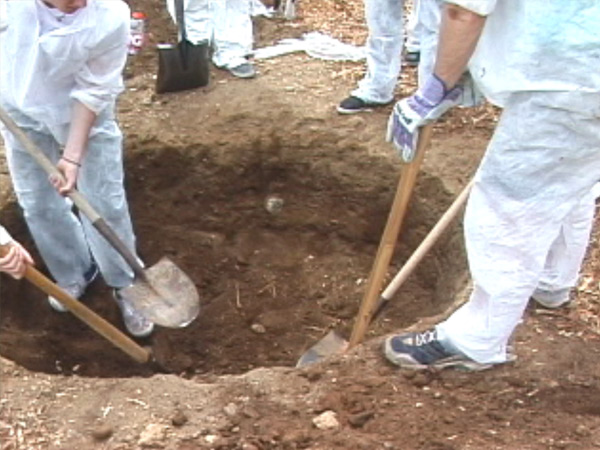
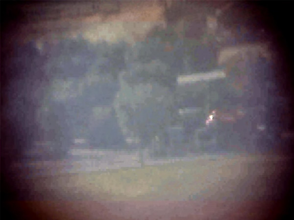

ID 517
Presented by the students of Special Topics in Art and Politics, a class at the California Institute of the Arts, led by Nancy Buchanan and Sam Durant. With support from the CalArts Interdisciplinary Fund.
May 2009

Nine to Five, 2009
Video still

Telescoping Community Center, 2009
Video still
Let Me In, 2009
Video still
Youth Speaks, 2009
Video still